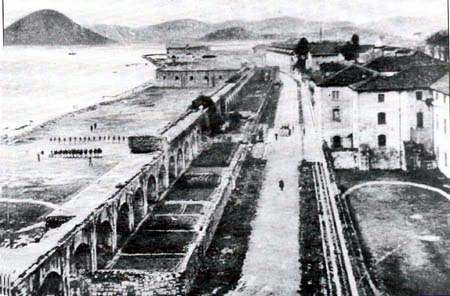

Año 1890.- Es significativa ver la arcada que se encuentra sobre el actual campo y la especie de fortaleza al fondo, donde actualmente está el pequeño pinar y el monumento a Juan de la Cosa. Da la impresión que, lo que hoy es campo, era la playa. (Foto http://www.villadesantona.com)
 |